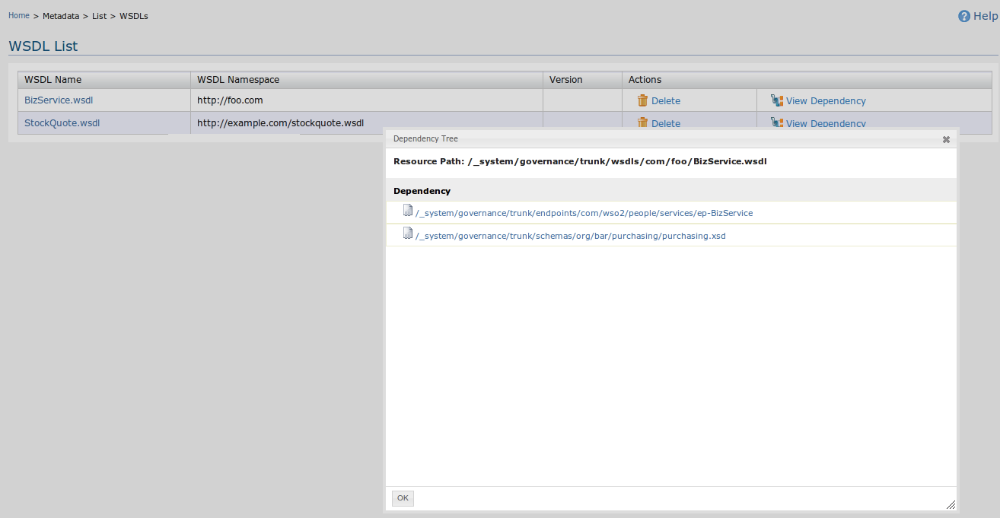

With metadata management we are allowing users to manage the imported metadata as resources management in the Governance Registry since all the information are stored as resource information inside the Governance Registry. In the Metadata list part users can list imported resources, WSDLs, Schemas and Policies.
When user click list WSDL user will be display the WSDLs imported through add WSDL UI. WSDL listing page displays the WSDL name, WSDL namespace, Version and delete link to click to delete the added resource. The WSDL listing page also contains View dependency link to view associated dependencies.

Figure 1: WSDL list